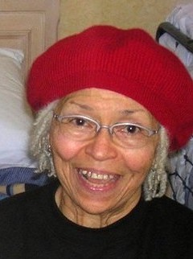

Obituary
Elsie Pauline Norman Johnson, 90, passed away on Friday, September 4, 2020 at her home in Oakland, CA.
Elsie was born to the late Paul and Corine Norman, on April 8, 1930 in Kossuth, MS. Daughter of a sharecropper father and seamstress mother, Elsie grew up in the church, attending Mt. Pleasant Missionary Baptist, Macedonia Missionary Baptist, and Alcorn Baptist churches.
Elsie graduated Corinth Colored High School with a 4.2 GPA, then attended Tougaloo College, earning a B.S. in Biology. An active Tougaloo student, Elsie was a member of the Paul Robeson Theatrical Society, crossed into the first Mississippi chapter of Delta Sigma Theta Sorority in 1950, was crowned “Ms. Tougaloo” the same year, and was voted “Most Popular” her senior year. While at Tougaloo, Elsie also met future husband, Ardee Johnson, a member of the Football team and Omega Psi Phi Fraternity. She married the McComb, MS native on September 7, 1950 in Pike County, MS. Elsie graduated from Tougaloo on May 29, 1951.
After graduation, Elsie followed her husband to Washington, DC where they started a family. While supporting her husband through dental school at Howard University, Elsie worked for the NAACP. The family continued to grow as Elsie joined Air Force Captain Johnson on bases across America, and for a post-war tour in Japan, before ultimately settling in Oakland, CA, where her husband began a long, successful dental career.
For the next 65 years, Elsie continued a lifelong dedication to family, the Oakland community, and public service. She is remembered by many in the greater Bay Area for her years of work in the Oakland Public Schools system, and as an administrative assistant for California’s State Board of Equalization, the Department of Public Health, the Center for Infectious Diseases, and the Employment Development Department.
Elsie remained active in the African-American community through work with Delta Sigma Theta Inc., the Links Inc., and as a long-standing member of Allen Temple Baptist Church. In her spare time, she enjoyed bowling, music (choral singing, gospel, Jazz and R&B), and was an avid dancer.
Elsie is preceded in death by her brothers, Joseph L., and Edward L. She is survived by her 4 children. Also joined in fond memories of Elsie are 9 grandchildren, 3 nieces, 1 nephew, and numerous friends.
Plans for a memorial have been temporarily postponed due to the pandemic.